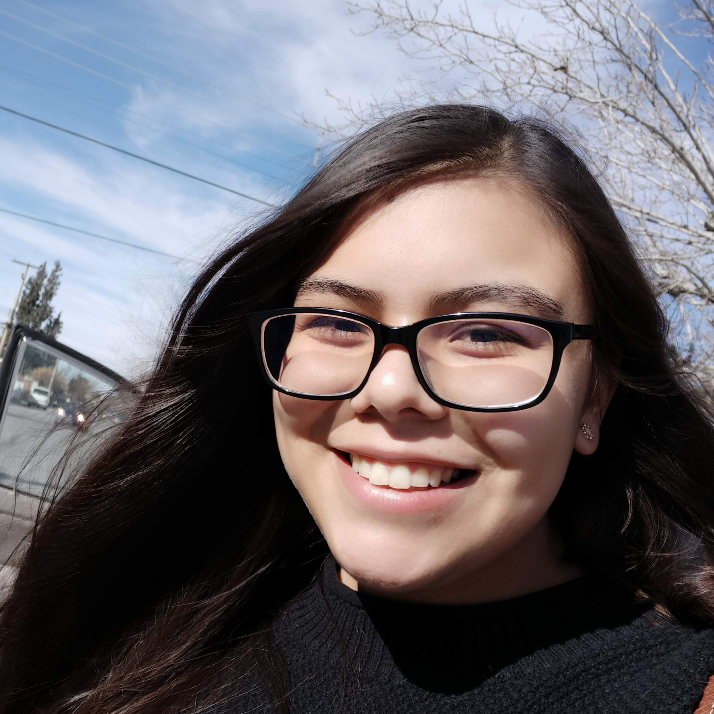

Nadia Garcia
- Soy originaria de Ciudad Juarez, Chihuahua
- He sido alumna del Tec desde la secundaria (estuve en Secundaria Tec)
- Estudio Ingeniería en Tecnologías Computacionales en Campus Monterrey
- Soy alumna de Quinto Semestre
- Tengo 20 años
GitHub: ncgo
Twiiter: @ngarciaorozco
Mi Trayectoria dentro del Tec
- Secundaria Tec Campus Ciudad Juarez
- Ingreso en 2012 con Beca de Talento Académico al Programa Bicultural
- Represento a la Secundaria en Olimpiadas de Matemáticas a nivel estatal
- Represento a la Secundaria en Intertecs 2015 con Jazz en Irapuato, Guanajuato
- Me graduo de Secundaria Tec con el Premio Borrego y mejor promedio de mi generación en 2015
- Prepa Tec Campus Ciudad Jaurez
- Ingreso en 2015 con beca de Talento Académico al Programa Bicultural
- Represento a la Preparatoria en Olimpiadas de Matemáticas a nivel estatal
- Represento a la Preparatoria en las competencias de FIRST Robotics Competition siendo parte del equipo XRams 6200
- Visito Campus Monterrey por primera vez durante la Semana de Tópicos en 2017
- Me graduo de Prepa Tec con Borrego de Excelencia Académica, Mejor Promedio de la Generación, y Borrego por Social Media en XRAMS en 2018
- Universidad en Campus Ciudad Jaurez y Campus monterrey
- Beca al Talento Académico 2018
- Curso mi primer semestre de universidad en Campus Ciudad Juarez en la trayectoria de Ingeniería en 2018
- A partir de mi segundo semestre, me transfiero a Campus Monterrey a estudiar Ingeniería en Tecnologías Computacionales en 2019
- Ingreso a VantTec en 2020
- Me desenvuelvo como Directora de Responsabilidad Social de la Sociedad de Alumnos de Ingeniería en Tecnologías Computacionales